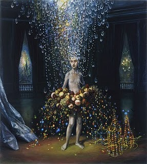

Some Talented Women
Perhaps as a backlash to months of ancient Roman history, of Emperors good and bad, I have, in the past week, found myself drawn to contemporary women’s voices. What follows is a list of who has caught my ear lately, as well as those around the web that I’ve admired for some time.
- Jennifer Egan: When her A Visit From the Goon Squad came out months ago, she seemed to be mentioned everywhere. And now that the book won a Pulitzer, there she is again, mentioned everywhere. (Actually, I’m most impressed that Egan degraded chick-lit as banal in an interview.) So here I am, finally ready to receive my copy, excited to read her.
- Marge Piercy: In the world of writers’ biographies online, Marge Piercy’s stands out. I’m struck by her life, by the adversities, pit-falls, energy and successes.
- Dorothy Allison: In about a month or so, Dorothy Allison will be reading in Rome at John Cabot. (Free readings I knew nothing about! I feel like I fell into a gold mine.) Before then I want to have read one of her books. By what I have garnered about her online, she seems implacable in the best possible way.
- Julie Heffernan: The paintings of Julie Heffernan are incredible. The mix of Baroque motifs, opulence, grimness, nature, bring the fantastic back near to reality. The world in which her subjects are placed, their connectedness to the surroundings, well, just see for yourself...

Self Portrait as Gorgeous Tumor by Julie Heffernan
And some women around the web that I enjoy reading:
- Jenn Ashworth: I’ve been reading Jenn Ashworth’s blog for years now. I love the wittiness of her words and am very in awe of the fact that she’s younger than me, has two kids and two published books.
- Eleonora Baldwin: When in search of a Roman recipe, I look no further than Eleanora’s blog, Aglio, Olio e Peperoncino —as well as for other food related commentary around Rome.
- Margo Millure: For beginning the mostly women’s travel website The Travel Belles, (as well as for accepting my writing).
- Carolyn Manney: Writer, photographer, chef, lover of goats, (as well as great friend), I don’t know what she can’t do!
And closer to home:
- My Mom: The end of the list signifies no lesser talent. Currently my mom is busy at work setting up a full fledged studio in her basement for her mosaics and glass art. She hopes to have three kilns going when she is finished—a great endeavor! Her work can be seen on her Facebook page.
Commentary for Some Talented Women
· · · · · · · · · · · · · · · · · · · ·
1 On Wednesday 04 May 2011 Carolyn wrote:
Hey! Thanks for including me on this lovely list, I feel honored.